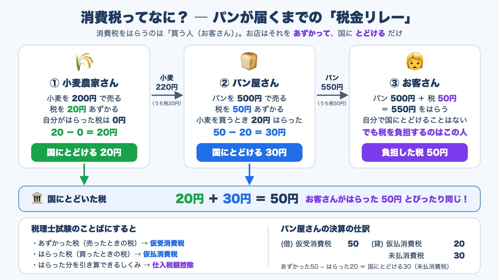
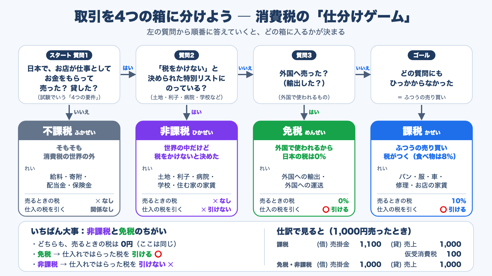
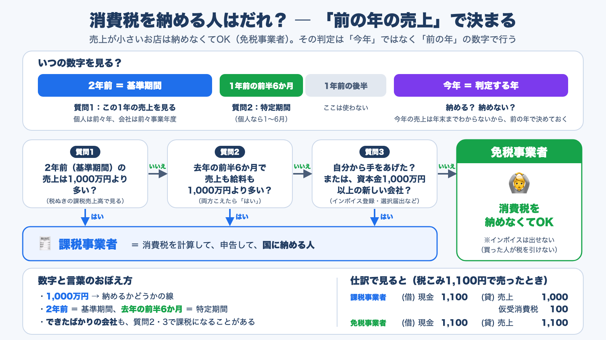
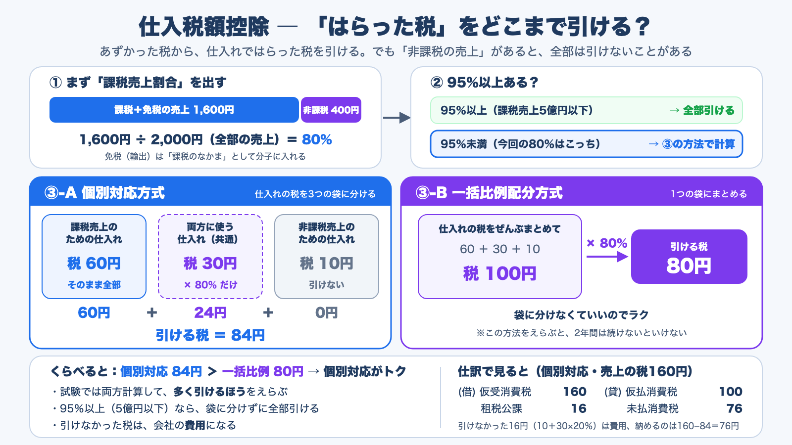
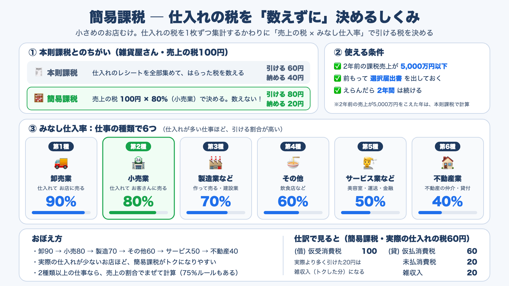

税理士試験消費税法 ／ 基礎編
消費税法は、計算の流れがいつも同じなので、型を覚えれば点が取りやすい科目です。その土台になるのが「お店は税をあずかって納める」「取引を4つの区分に分ける」「はらった税をどこまで引けるか」の3つです。小学生にもわかる言葉の図解と仕訳で順に確認し、計算問題4問と○×問題50問で仕上げます。
消費税を負担するのは、モノやサービスを買う人です。お店はその税をあずかって、国に納めます。まずこのしくみと、計算の最初の作業である「取引を4つの箱に分ける」方法をおさえます。

仮受消費税
売ったときにお客さんから受け取った税
仮払消費税
仕入れや経費の支払いでお店がはらった税
仕入税額控除
あずかった税から、はらった税を引けること
国内において
外国で行う取引は対象外
事業者が事業として
個人が自宅の家財を売るのは対象外
対価を得て
寄附や無償の贈与は対象外（例外あり）
資産の譲渡・貸付け、役務の提供
配当や保険金の受取りは対象外

非課税国内の取引だが、政策的に税をかけない
免税（輸出免税）外国で使われるので、日本の税は0%
国内で雑貨店を営む課税事業者（税抜経理）の当期の取引は次のとおりです。税率は標準税率10%だけとします。
売上が小さい事業者は、消費税を納めなくてもかまいません（免税事業者）。その判定は、今年の売上ではなく、前の年の数字で行います。今年の売上は年末までわからないので、前もって決めておくためです。

個人は前々年
法人は前々事業年度
この期間の課税売上高で判定する
個人は前年1月〜6月
法人は前事業年度の最初の6か月
基準期間で免税になったときに見る
税抜き・免税売上を含む・返品等を引いた後
基準期間に免税事業者だったときは、税抜きにしない
A社（3月決算、資本金500万円）はX1年4月1日に設立されました。当期はX3年4月1日〜X4年3月31日です。X1年度は免税事業者でした。
本則課税の計算は、毎回同じ流れです。いちばん大事なのが仕入税額控除で、非課税の売上があると、はらった税を全部は引けないことがあります。

個別対応方式仕入れの税を3つの袋に分ける
一括比例配分方式1つの袋にまとめる
B社（税抜経理）の当期の資料は次のとおりです。税率は標準税率10%だけとし、中間納付はありません。
小さめの事業者むけの計算方法です。仕入れの税をレシート1枚ずつ集計するかわりに、「売上の税 × みなし仕入率」で引ける税を決めます。

本則課税実際の仕入れの税で計算
納める合計 2,100,000
簡易課税売上の税 × 50%
納める合計 1,500,000
簡易課税のほうが 600,000 得
サービス業は売上の多くが人件費で、給料は課税仕入れになりません。実際の仕入れの割合は30%（9,000,000 ÷ 30,000,000）なのに、簡易課税なら50%を引けます。人件費が多い業種ほど、簡易課税が有利になりやすいです。
本則課税実際の仕入れの税で計算
納める合計 200,000
簡易課税売上の税 × 90%
納める合計 400,000
本則課税のほうが 200,000 得
実際の仕入れの割合は95%（38,000,000 ÷ 40,000,000）で、みなし仕入率の90%より高くなっています。卸売業は率が高いので簡易課税が得に見えますが、利幅が10%より小さいなら本則課税のほうが得です。
本則課税実際の仕入れの税で計算
簡易課税売上の税 × 60%
ふだんの年は簡易課税が 800,000 得、改装する年だけは本則課税が 1,200,000 得
改装する年に本則課税へ戻すには、その年が始まる前の日までに「簡易課税制度選択不適用届出書」を出しておく必要があります。改装が決まってから出しても間に合いません。また、簡易課税を始めてから2年たたないと、不適用届出は出せません。本則課税の間に1件1,000万円以上の資産（高額特定資産）を買うと、その後おおむね3年間は簡易課税に戻れない決まりもあるので、改装後の年まで見て決めます。
C社は小売業（第2種）と飲食店業（第4種）を営み、簡易課税を選んでいます。当期の課税売上高（税抜き）は次のとおりです。税率は標準税率10%だけとします。
○か×を選ぶと、「ここがポイント」「ひっかけ例（または正しい文）」「なぜ？」「具体例で確認」「覚えるポイント」「仕訳で確認」「根拠」がすぐに出ます。分野で絞り込んだり、順番をシャッフルしたりできます。
つなげて覚えるコツ：消費税法の計算は、どれも「あずかった税 − はらった税 ＝ 納める税」の形です。4つの区分は「はらった税を引けるか」、納税義務者は「そもそもこの計算をするか」、課税売上割合と簡易課税は「はらった税をどれだけ引けるか」を決めるためのルールだと考えると、論点どうしがつながります。